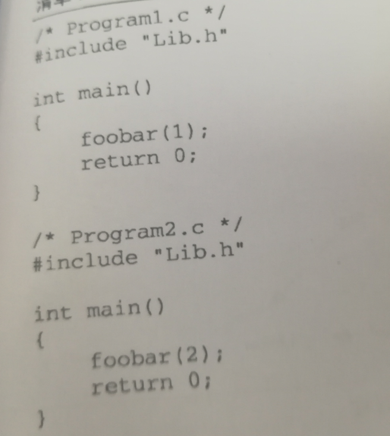
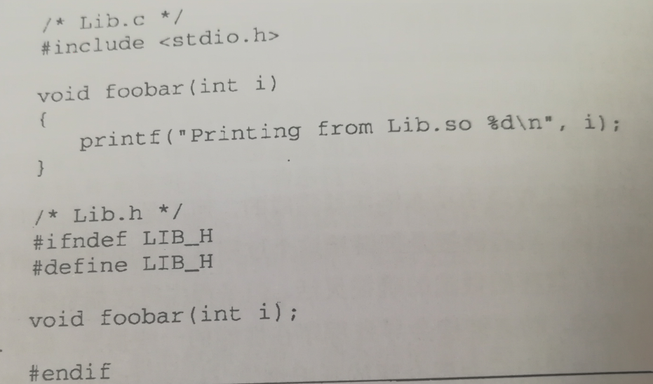
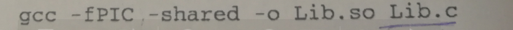
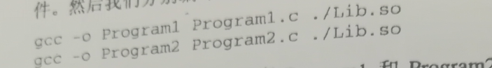
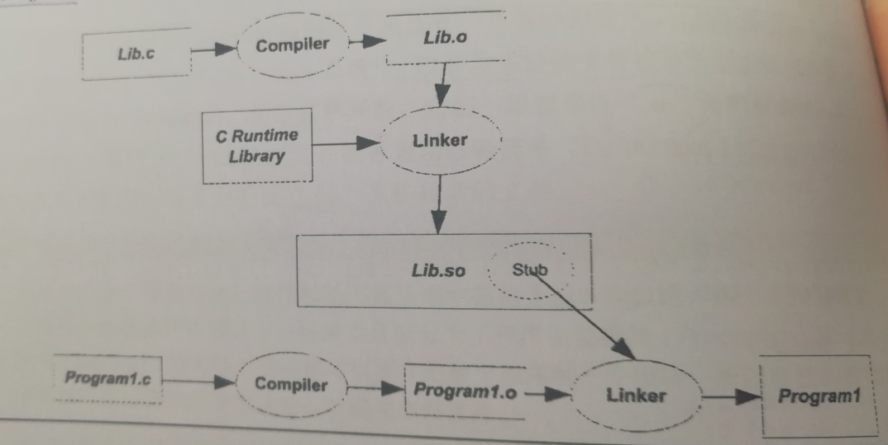

源代码到可执行文件过程：预编译（生成.i。处理源代码中以#开始的u、预编译指令，展开宏定义，删注释，递归包含头文件，加行号和文件名标识。详见P39），编译（生成.s。将预编译文件进行词法、语法、语义分析，优化生成汇编代码），汇编（生成.o。将汇编代码转换成机器可执行指令），链接（多个不同的目标文件之间相互粘到一起）。
静态链接：
所有的程序模块都链接成一个单独的可执行文件。由链接器在链接时将库的内容加入到可执行程序中的做法。浪费空间。是程序用一个链接一个，不知道共享的那种。发布时也会引入不同版本的操作系统需编写不同的链接程序。
动态链接：
程序的模块分隔成独立的文件，等程序要运行的时候才链接。链接过程推迟到运行时刻。有共享对象（linux：.so windows：.dll）。延迟绑定。下面是例子
源代码如下，需要四个文件 Lib.c Lib.h Program1.c Program2.c


通过如下指令生成Lib.so共享对象

编译Program1.c和Program2.c

Program1的编译链接过程

静态链接时，这一步会把Program1.o和Lib.o链接到一起，产生输出可执行文件Program1.
动态链接时，Lib.o没有链接进来，链接的输入目标文件只有Program1.o